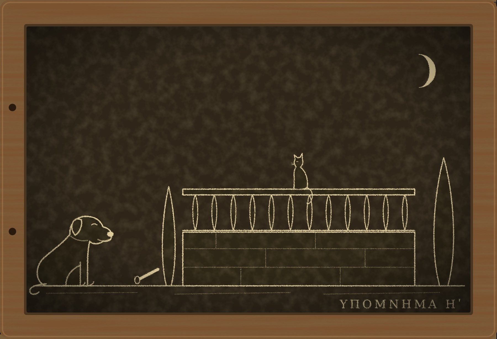

Гипомнема VIII Сад

I
Пятнадцать лет я не спал три ночи перед каждым новолунием. Привычка эта завелась у меня в двести двадцать шестом году, когда я ждал смерти, и пережила все причины, по которым завелась. Я не ждал смерти уже лет десять, но три ночи по-прежнему сидел у окна, смотрел, как темнеет над Капитолием, и считал. Если меня спрашивали зачем, я отвечал, что стражу полезно помнить счёт. Это была правда, только не вся.
В мартовские иды коллегия собралась в углу Юлиевой базилики за колоннами и объявила, что в двести двадцать шестом году память старшего хранителя клятвы Гельвии была чиста. Второй хранитель, Евмен, страж при дворе по части формул, подтвердил это вслух, и коллегия поверила, потому что так помнят двое. Гельвия умерла пять лет назад, и спросить её было уже нельзя. Аполлония казнили пятнадцать лет назад, и его спросить тоже было нельзя. Меня вернули в сословие.
Я на собрание не пошёл. Никанор потом пересказал мне всё дословно, и голосом Евмена тоже.
— Тебя не спросили, — сказал он, закончив.
— Он меня предупредил.
— Тебе назначат пару. Старейшие уже выбирают.
— Скажи старейшим, что пара у меня есть.
Никанор помолчал.
— Я им так и сказал, — ответил он. — Ещё до того, как они начали выбирать.
Так я снова стал стражем слов. Тогу мне вернули ту же, что я сдал пятнадцать лет назад: в коллегии ничего не выбрасывают. Она пахла кедром и сундуком, и Ферокс обнюхивал её полдня с подозрением, а потом лёг на неё и уснул. Пами смотрел на тогу с балки и сказал, что у меня теперь будет меньше времени на рыбную лавку. Он ошибся: времени стало больше, потому что у стража, вернувшегося из изгнания, в первый месяц нет ни одной клятвы.
Первая пришла на девятый день после ид.
II
На Эсквилине, за старой Сервиевой стеной, где раньше хоронили бедных, а потом разбили сады, есть небольшой сад с домом, террасой и портиком. Хозяином его был Тит Флавий Пуденс, вольноотпущенник, разбогатевший на подрядах для городских бань. Сам он учёностью не отличался, но держал при доме философскую школу: в портике каждое утро сидел старик-грек и толковал Эпикура десятку юношей из хороших семей, а Пуденс слушал из-за колонны и платил за всё.
Сад достался Пуденсу по завещанию его патрона, последнего в своём роду. Племянник патрона по сестре, Гай Варий Мамерк, оспорил завещание. Он утверждал, что дядя незадолго до смерти при Пуденсе сказал, что отменит отказ, и не успел только потому, что умер. Претор потребовал от Пуденса клятвы.
Клятву составлял не я, но хранить её коллегия поставила меня и Никанора. В коллегии решили, что вернувшемуся стражу следует начать с дела, где ничего не может случиться. Пуденс поклялся у Дия Фидия:
— «При мне мой патрон не отменял завещания и не говорил, что отменит. Клянусь в этом перед Дием Фидием».
Голос у него сел на третьем слове. Это был полный, краснолицый человек лет пятидесяти пяти, который боялся клятвы так, как боятся её все, кто никогда не лгал под ней и не собирается. До луны оставалось двадцать две ночи.
Я начал их считать в тот же вечер, и уже не за себя. Я пятнадцать лет считал ночи до своей луны, а теперь узнал, каково считать до чужой. Это оказалось хуже. Свою смерть ты хотя бы знаешь изнутри.
За пять ночей до луны Пуденса нашли под террасой его сада со сломанной шеей.
Терраса там высокая, в полтора человеческих роста, над нижней аллеей, и перила на ней каменные, по пояс. Пуденс любил сидеть там по вечерам с учителем своей школы, смотреть на город и разговаривать о том, о чём говорить в Риме не принято. Нашёл его садовник на рассвете. Рим рассудил так, как рассуждает всегда: человек поклялся, что патрон ничего не отменял, и упал до луны. Значит, отменял.
Мамерк пришёл к претору в тот же день, в трауре, и потребовал сад.
— Ты хранил его клятву, — сказал мне Никанор, когда мы стояли под террасой. — Коллегия ждёт, что ты скажешь.
— Я скажу, что он не лгал.
— Тебя только вчера вернули.
— Поэтому меня и слушают, — ответил я. — Через год перестанут.
III
Учителя звали Сосикл. Ему было лет шестьдесят пять, родом он был из Апамеи, говорил по-гречески чище, чем по-латыни, и смотрел на всех, включая меня, с одинаковым дружелюбием, как смотрит человек, которому от людей ничего не нужно. Учеников у него оставалось семь. Он сказал мне, что двадцать лет назад было тридцать, и сказал это без огорчения, как говорят о погоде.
— Эпикур нынче не в моде, — объяснил он. — Юношам нравится Платон: у Платона душа бессмертна и боги заботятся о людях. Эпикур говорит, что душа рассеивается, а богам нет до нас дела. Отцы этого не любят. Отцы хотят, чтобы сыновья боялись.
Свидетельскую клятву он дал на следующий день после смерти Пуденса, сам, без просьбы, потому что был в ту ночь на террасе последним. Её тоже поставили хранить нас с Никанором. Сосикл поклялся у того же алтаря:
— «В ту ночь я сидел с Пуденсом на террасе один. Когда я уходил, он был жив и здоров. Клянусь в этом перед Дием Фидием».
Голос у него не сел. Я заметил это и запомнил, как запоминаю всё, но тогда не придал этому значения. Бывают люди, у которых голос не садится никогда, и обычно это люди, которые часто говорят перед толпой.
До луны оставалось четыре ночи. Сосикл их прожил. На пятое утро он сидел в портике со своими семью учениками и толковал письмо Эпикура к Менекею, а я стоял за колонной, где раньше стоял Пуденс, и слушал.
— «Привыкай думать, что смерть для нас ничто», — читал он. — «Ибо всё хорошее и дурное заключается в ощущении, а смерть есть лишение ощущения».
После урока он позвал меня к себе, налил вина и сказал, глядя в чашу:
— Ты хранил мою клятву. Значит, должен знать, что я солгал. Я был на террасе не один.
Я молчал.
— Ты не удивлён, — сказал он с интересом. — Я думал, стражи удивляются, когда клятва переживает луну и оказывается ложной. Для того вас и держат.
— Почему ты жив? — спросил я.
Он пожал плечами.
— Потому что богам нет до нас дела. Так учил Эпикур, так учил мой учитель, так учу я. Боги живут в промежутках между мирами, им хорошо, они ни о чём не беспокоятся, и меньше всего о том, что сказал старый грек у алтаря на Квиринале. Я не считаю ночей, страж. Луна для меня просто луна. Ты их считаешь?
— Считаю.
— Зачем?
Я мог бы ответить ему, как отвечаю всем. Но он только что сказал мне правду, которую за пятнадцать лет мне не говорил никто, и я ответил ему тем же.
— Пятнадцать лет назад я поклялся в том, что помнил, а память у меня оказалась подменённой. Я считал ночи, ждал смерти и не умер. С тех пор считаю. Только недавно понял, что всё это время не верил, что эти ночи мои.
Сосикл посмотрел на меня долго и без насмешки.
— Тогда ты эпикуреец больше, чем мои ученики, — сказал он. — Тебе только недостаёт смелости это сказать.
— Смелости или уверенности?
— У нас это одно и то же. — Он отпил вина. — Эпикур оставил ученикам четыре лекарства, и я даю их каждому мальчику в первый же день: бога не бойся, смерти не бойся, хорошее достать легко, дурное легко перетерпеть. Первые два лекарства мальчики глотают охотно, пока им пятнадцать. К двадцати их начинает тошнить, и они уходят к Платону. Отцы радуются.
— А ты?
— А я принимаю их сорок лет и до сих пор здоров. — Он улыбнулся. — Ваш римлянин Лукреций написал об этом целую поэму. Он говорит, что люди выдумали богов от страха перед громом, а потом стали бояться собственной выдумки. Я бы сказал мягче. Боги есть, Эпикур этого не отрицал. Им просто незачем нами заниматься, как тебе незачем заниматься муравьями под твоей лестницей.
— Под моей лестницей нет муравьёв.
— Значит, ты хорошо за ней следишь, — сказал он. — Или муравьи следят за тобой. В любом случае ты меня понял.
Я спросил, зачем он вообще пошёл клясться, если считает клятву пустым звуком. Никто его не звал. Он мог промолчать, и Рим ни о чём бы его не спросил.
— Потому что в Риме клятва не пустой звук, — ответил он. — Пустой звук она для богов, а для людей это договор. Эпикур учил, что справедливость есть уговор людей не вредить друг другу и не терпеть вреда. Ничего другого в ней нет, но и этого достаточно. Я пошёл к алтарю, чтобы люди перестали искать на террасе того, кого я не хотел им отдавать. Люди поверили. Договор соблюдён.
— Кого ты не хотел отдавать?
— Этого я тебе не скажу. Ты страж и запомнишь.
— Ты сказал, что справедливость есть уговор не вредить. Пуденсу ты повредил.
Он поставил чашу.
— Пуденсу уже нельзя повредить. Он рассеялся, как рассеемся мы с тобой. Ему всё равно.
— Ему всё равно, — согласился я. — Но Рим теперь считает его лжецом, которого покарали боги. Сад, который он любил, отойдёт тому, кто говорит, что Пуденс солгал. И твоя школа уйдёт вместе с садом. Это вред не ему, а тем, кто его помнит. По твоему уговору это тоже считается?
Сосикл долго молчал. Я впервые видел, чтобы он не знал, что ответить, и, по-видимому, он тоже видел это впервые, потому что посмотрел на собственные руки с удивлением.
— Я подумаю, — сказал он наконец. — Эпикур учил думать не торопясь.
— Луна приходит каждые двадцать девять дней, — сказал я. — Это достаточно не торопясь.
Когда я вышел, Пами сидел на перилах террасы, над тем местом, где нашли Пуденса. Как он сюда попал, я не спрашиваю уже давно.
— Он весь вечер не взглянул на небо, — сказал кот. — Все смотрят, когда считают. Ты смотришь. Этот, со сломанной шеей, смотрел каждый вечер, мне садовник сказал. А старик не смотрит. Ему там нечего искать.
IV
Ночью я сидел у окна, хотя до следующей луны было ещё двадцать восемь ночей, и пытался понять, что я узнал.
Я знаю, за что карают боги. Так я думал пятнадцать лет и так сказал Никанору два года назад. Боги спрашивают с человека за то, во что он верил, когда открывал рот. Обманутый доживает до луны. Раб, которого боги не слышат, доживает. Человек, который знает, что лжёт, не доживает.
Сосикл знал, что лжёт. Он сказал мне это сам. И дожил.
Значит, я знал не всё. Можно было рассудить так: боги не слышат того, кто не слышит их. Сосикл сорок лет учил, что им нет до нас дела, и они ответили ему тем же. Иудей Юст говорил, что Дий Фидий для него имя, за которым ничего нет, и для такого человека клятва у Дия Фидия тоже, вероятно, ничего не значит. Боги, рассудил я, как хозяева: не входят туда, где их не ждут.
Объяснение было складное и мне не понравилось. Оно было слишком похоже на то, что я хотел услышать. А можно было рассудить и по-другому, и об этом я думать не стал. Я заставил себя думать о Пуденсе.
Сосикл солгал в одном слове, «один». Значит, на террасе был кто-то ещё, кого он прикрыл клятвой. Пуденс в ту ночь был жив, когда Сосикл уходил, и в это я верил: голос у старика не дрогнул бы и на правде. Значит, кто-то остался на террасе после Сосикла, и Сосикл знал кто и не хотел, чтобы знали другие.
Утром я пошёл в сад с Фероксом. Садовник пустил нас на террасу, где уже сменили подушки на скамье и вымели пол. Ферокс обошёл террасу, потом спустился по лестнице, которая ведёт с террасы в библиотеку при портике, и встал у двери, виляя хвостом.
— Тут спал мальчик, — сказал он. — Под той лавкой, где свитки. Долго, несколько ночей. Пахнет маслом от лампы и мальчиком. А на перилах наверху пахнет ещё одним. Он был там недолго, но крепко держался. Пахнет таким маслом, каким мажут волосы на Форуме. Сладким.
Под лавкой в библиотеке я нашёл крошки хлеба и огарок светильника. Садовник, когда я спросил его, отвёл глаза и сказал, что за мальчиками не следит.
Учеников у Сосикла было семь. Одного из них, младшего, Луция Фабия, сына сенатора, в портике не было со дня смерти Пуденса. Сосикл сказал, что мальчик болен.
V
Луция Фабия я нашёл не дома, а в книжной лавке на Аргилете, где когда-то торговал Невий. Он стоял у полки с греческими свитками и читал, шевеля губами. Ему было семнадцать лет, и он был бледен, как бывают бледны юноши, которые не спят.
— Ты ночевал в саду Пуденса, — сказал я.
Он вздрогнул, но не убежал.
— Отец запретил мне ходить к Сосиклу. Он говорит, что эпикурейцы учат юношей не бояться богов, а кто не боится богов, тот не боится и отца. Он прав. Я перестал его бояться. Поэтому я ходил по ночам, пока отец думал, что я сплю. Пуденс разрешал мне читать в библиотеке. Он сам не читал, но любил, когда кто-нибудь читает.
— В ту ночь ты был на террасе.
— Я поднялся, когда Сосикл ушёл. Хотел спросить Пуденса про одну книгу. Он сидел на скамье и смотрел на небо, считал что-то на пальцах. И тут на лестнице с аллеи кто-то пошёл. Пуденс сказал мне: «Спрячься, это ко мне», — и я ушёл за колонну. Это был Мамерк. Я видел его раньше, он приходил к претору и в сад, когда смотрел, что ему достанется.
Он замолчал.
— Они говорили?
— Недолго. Мамерк сказал, что ещё не поздно отказаться от клятвы. Пуденс ответил, что уже поздно, потому что он её дал, и что он не лгал. Мамерк сказал: «Тогда пусть боги разбираются». И Пуденс… — юноша сглотнул. — Мамерк взял его под колени, как берут мешок, и перевалил через перила. Это было очень быстро. Пуденс не крикнул. Я сидел за колонной до рассвета, а потом убежал через библиотеку.
— Ты сказал Сосиклу.
— Утром. Сосикл сказал, что пойдёт клясться сам, и что я должен молчать, потому что если я скажу, отец узнает, где я был, и тогда у меня не будет ни отца, ни Эпикура. Он сказал, что поклянётся за меня, что был один, и что ему это ничего не будет стоить.
— Почему?
— Он сказал, что не считает ночей.
Я вернулся домой, лёг и долго смотрел на балку, на которой лежал Пами.
— Мальчик тебе всё рассказал, — сказал кот. — Что теперь?
— Теперь нужно, чтобы он рассказал это претору. Под клятвой. Сын сенатора, свободнорождённый, клятва его стоит. Но тогда отец узнает, где он был ночью.
— А если не скажет?
— Тогда сад получит Мамерк, а Пуденс останется лжецом, которого покарали боги.
Пами помолчал.
— Кошки не стыдятся, — сказал он. — Поэтому нас и не зовут клясться.
VI
Я не стал уговаривать Луция. В Риме и без меня достаточно людей, которые решают за других, что им лучше. Я сделал то, что умею: составил формулу.
Претор, решая спор о саде, обязан был выслушать клятву наследника. После смерти Пуденса сад по закону переходил к его наследникам, а Мамерк требовал его себе на том основании, что Пуденс солгал и, следовательно, завещание патрона было отменено. Чтобы получить сад, Мамерку нужно было поклясться, что дядя при нём говорил об отмене. Эту клятву составлял я по просьбе наследников Пуденса, и претор её принял, потому что вернувшийся страж теперь снова составитель формул.
— «Мой дядя при мне говорил, что отменит отказ Пуденсу. Смерти Пуденсу я не причинял ни рукой, ни словом, и в ночь его смерти на его террасу не поднимался. Клянусь в этом перед Дием Фидием».
Слушать дело претор назначил в Юлиевой базилике, в середине дня, когда там больше всего народу. Спор о саде на Эсквилине к тому времени знал весь город. Знали, что наследник поклялся и упал с террасы до луны. Знали, что за садом стоит школа, где учат, будто богам нет дела до людей, и половина базилики пришла посмотреть, как боги ответят на это при всех.
Мамерк пришёл в трауре, с адвокатом, которого я знал ещё по прежним годам: Клодий Фуск, человек, который за двадцать лет научился выигрывать дела, не произнося ни одного слова, за которое его можно было бы привести к Дию Фидию. Никанор прочёл формулу, и в базилике сделалось тихо, насколько там вообще бывает тихо, когда за соседними колоннами судятся ещё три суда.
Фуск поднялся первым.
— Почтенный претор, наследник готов поклясться в том, что относится к делу, — сказал он. — Он готов поклясться, что дядя при нём говорил об отмене отказа. Остальное в формуле к спору о наследстве не относится. Это обвинение в убийстве, вставленное в иск о саде. Ни один закон не обязывает человека клясться в том, о чём его не спрашивают в суде.
Претор посмотрел на меня. Формулу составлял я, и отвечать за неё полагалось мне.
— Наследник требует сад на одном основании, — сказал я. — На том, что Пуденс солгал, поклявшись, будто патрон ничего не отменял. А солгал Пуденс, по словам наследника, потому, что умер до луны. Другого доказательства у наследника нет: дядя его мёртв, свидетелей при разговоре не было, расписки нет. Всё его право стоит на том, что смерть Пуденса была карой. Если она была карой, то наследник прав. Если её причинил человек, у наследника нет ничего. Значит, вопрос о том, как умер Пуденс, и есть вопрос о саде. Я спрашиваю только о нём.
— Ты обвиняешь моего доверителя, — сказал Фуск.
— Я никого не обвиняю. Я составил формулу, которую честный наследник произнесёт за одно дыхание. Если наследник честен, ему нечего бояться. Если формула ему мешает, пусть скажет, какое слово.
Фуск открыл рот и закрыл. Указать слово значило бы сказать, что именно в этом слове его доверитель не уверен. Двадцать лет он не попадал в такие положения, потому что в них не попадают люди, которые ничего не говорят. Здесь говорить приходилось, иначе за него говорило молчание.
— Формула одна, — сказал претор. — Клянись целиком или откажись.
Мамерк выслушал всё это, не меняясь в лице. Он был человек лет сорока, ухоженный, с волосами, смазанными тем сладким маслом, которое продают на Форуме у храма Кастора, и пахло от него так сильно, что Никанор, стоявший рядом со мной, чуть заметно отвернулся.
— Сколько ночей до луны? — спросил Мамерк, ни к кому не обращаясь.
Вопрос был задан тихо, но базилика его услышала. Никанор ответил, как отвечают стражи, без выражения:
— Двадцать шесть.
Мамерк кивнул. Я видел, как он считает. Он смотрел в пол, и губы его шевелились, как шевелились у Луция над греческими свитками. Двадцать шесть ночей. Я знал этот счёт лучше, чем кто-либо в базилике. Человек, который считает ночи до клятвы, ещё не произнеся её, уже знает, чем она для него кончится.
Пуденс тоже считал ночи. Он считал их, сидя на террасе, честный человек, который боялся клятвы, потому что никогда под ней не лгал. Мамерк сказал ему: «Тогда пусть боги разбираются», — и не стал ждать, пока они разберутся. А теперь стоял перед алтарём, к которому сам отправил Пуденса, и считал так же, как тот.
— Ты вставил это нарочно, — сказал он мне, подняв голову.
— Нарочно, — согласился я. — Составитель формул вставляет всё нарочно. Меня этому учили.
Фуск тронул его за рукав и что-то сказал на ухо. Мамерк выпрямился.
— Отказ не запрещён, — сказал он.
По базилике прошёл звук, какой бывает, когда сотня людей одновременно выдыхает. Сзади кто-то засмеялся, и на него зашикали. Претор записал отказ, не поднимая глаз.В Риме отказ от клятвы ничего не доказывает. Но без клятвы Мамерк не мог получить сад, и претор отказал ему в иске. Пуденс посмертно остался человеком, который не лгал. Наследство осталось его наследникам. Сосикл и его семь учеников остались в портике.
Мамерка за убийство никто не судил. Чтобы судить, нужен свидетель, который поклянётся, что видел. Свидетель такой был, но молчал.
Через три дня Луций Фабий пришёл ко мне сам, поднялся по лестнице, споткнулся на третьей ступени сверху и вошёл красный, как бывают красны юноши, которым стыдно, что они споткнулись.
— Я скажу претору, — сказал он. — Под клятвой. Сосикл говорит, что я не обязан, потому что Пуденсу уже всё равно, а боги не вмешиваются. Но Пуденсу было не всё равно. Он сказал Мамерку, что не лгал. Я хочу, чтобы это было записано. Не в книгу, — он покраснел ещё сильнее, — а там, где у вас записывают. В памяти.
Он поклялся на следующий день. Отец его узнал обо всём через час и, по слухам, не разговаривает с сыном до сих пор. Мамерка взяли. Луций Фабий, как говорят, больше не ходит в портик к Сосиклу, а ходит в книжную лавку на Аргилете и читает там Платона, у которого душа бессмертна и боги заботятся о людях.
VII
Через месяц я снова поднялся в сад к Сосиклу. Старик сидел в портике один: учеников стало шесть, и в тот день они не пришли.
— Ты отнял у меня ученика, — сказал он без упрёка.
— Он сам ушёл.
— Он ушёл к Платону, потому что Платон обещает, что всё запомнят. Мальчику оказалось важно, чтобы запомнили. Эпикур такого не обещает. — Он налил вина. — Ты ведь тоже из тех, кому важно, чтобы запомнили. Иначе ты бы не стал стражем.
— Ты обещал подумать о вреде тем, кто помнит, — сказал я.
— Я подумал. — Он пожал плечами. — Мальчик решил раньше меня. Эпикур был бы недоволен нами обоими: мальчик выбрал память вместо покоя, а я слишком долго выбирал покой. Луна, как ты сказал, пришла через двадцать девять дней, а я всё думал.
— Ты солгал под клятвой и жив, — сказал я. — Ты единственный такой человек, о котором я знаю наверняка.
— Ты хочешь знать почему.
— Хочу.
— Я сказал тебе почему.
— Ты сказал, что богам нет до нас дела. Но тогда почему умирают другие?
Сосикл подумал.
— Может быть, они умирают от того, что считают ночи, — сказал он. — А может быть, богам нет дела только до тех, кому нет дела до них. Я не знаю, страж. Эпикур учил, что не нужно знать всё. Нужно знать достаточно, чтобы не бояться.
Он проводил меня до ворот и на прощание сказал:
— Перестань считать.
Я не перестал. Вечером, накануне следующей луны, я сидел у окна, как всегда, а Ферокс лежал у двери, а Пами на балке. Небо над Капитолием было чистое, и серп показался там, где ему положено. Я досчитал до конца, как досчитываю пятнадцать лет, и впервые заметил, что считаю не за себя, а за тех, кто где-то в Риме сейчас тоже сидит у окна.
На табличке «Чужие кары» я записал одиннадцатое дело: Тит Флавий Пуденс, вольноотпущенник, сброшен с террасы, за кару принял весь Рим, кроме одного мальчика.
Потом я перевернул табличку. На обороте с прошлой зимы стояла одна запись. Я прибавил к ней вторую, и рука у меня в этот раз была твёрдой: «Сосикл, учитель Эпикура, солгал под клятвой, зная, что лжёт. Жив. Я не знаю почему».
Пами посмотрел на запись с балки и ничего не сказал. Рыбы в этот раз не полагалось никому.